| Matrix name | Aligned logos | cor |
Ncor |
logoDP |
NIcor |
NsEucl |
SSD |
NSW |
rcor |
rNcor |
rlogoDP |
rNIcor |
rNsEucl |
rSSD |
rNSW |
rank_mean |
match_rank |
Aligned matrices |
|---|
| positions_7nt_m1_shift2 (positions_7nt_m1) |
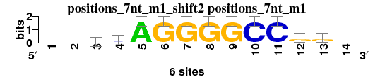 |
|
|
|
|
|
|
|
|
|
|
|
|
|
|
|
|
; positions_7nt_m1; m=0 (reference); ncol1=11; shift=2; ncol=14; --vsAGGGGCCgg-
; Alignment reference
a 0 0 2 1 6 0 0 0 0 0 0 1 1 0
c 0 0 2 3 0 0 0 0 0 6 6 1 1 0
g 0 0 2 2 0 6 6 6 6 0 0 4 4 0
t 0 0 0 0 0 0 0 0 0 0 0 0 0 0
|
| 2588_MA0342.1_JASPAR_CORE_2009__shift4 (2588_MA0342.1_JASPAR_CORE_2009_) |
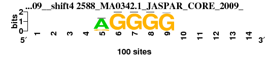 |
0.994 |
0.452 |
8.688 |
0.451 |
0.968 |
0.052 |
0.995 |
1 |
12 |
2 |
7 |
1 |
1 |
1 |
3.571 |
1 |
; positions_7nt_m1 versus 2588_MA0342.1_JASPAR_CORE_2009_; m=1/15; ncol2=5; w=5; offset=2; strand=D; shift=4; score= 3.5714; ----AGGGG-----
; cor=0.994; Ncor=0.452; logoDP=8.688; NIcor=0.451; NsEucl=0.968; SSD=0.052; NSW=0.995; rcor=1; rNcor=12; rlogoDP=2; rNIcor=7; rNsEucl=1; rSSD=1; rNSW=1; rank_mean=3.571; match_rank=1
a 0 0 0 0 83 0 0 0 0 0 0 0 0 0
c 0 0 0 0 0 0 0 0 0 0 0 0 0 0
g 0 0 0 0 16 99 99 99 99 0 0 0 0 0
t 0 0 0 0 0 0 0 0 1 0 0 0 0 0
|
| 2615_MA0381.1_JASPAR_CORE_2009__shift7 (2615_MA0381.1_JASPAR_CORE_2009_) |
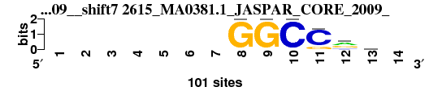 |
0.926 |
0.505 |
6.941 |
0.508 |
0.917 |
0.497 |
0.959 |
4 |
5 |
9 |
2 |
4 |
4 |
4 |
4.571 |
2 |
; positions_7nt_m1 versus 2615_MA0381.1_JASPAR_CORE_2009_; m=2/15; ncol2=6; w=6; offset=5; strand=D; shift=7; score= 4.5714; -------GGCCrk-
; cor=0.926; Ncor=0.505; logoDP=6.941; NIcor=0.508; NsEucl=0.917; SSD=0.497; NSW=0.959; rcor=4; rNcor=5; rlogoDP=9; rNIcor=2; rNsEucl=4; rSSD=4; rNSW=4; rank_mean=4.571; match_rank=2
a 0 0 0 0 0 0 0 0 0 0 0 49 21 0
c 0 0 0 0 0 0 0 0 0 100 84 15 18 0
g 0 0 0 0 0 0 0 100 100 0 16 37 28 0
t 0 0 0 0 0 0 0 0 0 0 0 0 32 0
|
| 2604_MA0366.1_JASPAR_CORE_2009__shift4 (2604_MA0366.1_JASPAR_CORE_2009_) |
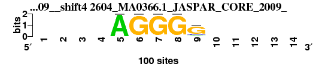 |
0.990 |
0.450 |
8.421 |
0.446 |
0.960 |
0.079 |
0.992 |
2 |
13 |
5 |
9 |
2 |
2 |
2 |
5.000 |
3 |
; positions_7nt_m1 versus 2604_MA0366.1_JASPAR_CORE_2009_; m=3/15; ncol2=5; w=5; offset=2; strand=D; shift=4; score= 5; ----AGGGG-----
; cor=0.990; Ncor=0.450; logoDP=8.421; NIcor=0.446; NsEucl=0.960; SSD=0.079; NSW=0.992; rcor=2; rNcor=13; rlogoDP=5; rNIcor=9; rNsEucl=2; rSSD=2; rNSW=2; rank_mean=5.000; match_rank=3
a 0 0 0 0 100 0 0 0 11 0 0 0 0 0
c 0 0 0 0 0 0 0 0 12 0 0 0 0 0
g 0 0 0 0 0 100 100 100 77 0 0 0 0 0
t 0 0 0 0 0 0 0 0 0 0 0 0 0 0
|
| 2587_MA0341.1_JASPAR_CORE_2009__shift4 (2587_MA0341.1_JASPAR_CORE_2009_) |
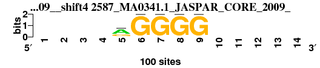 |
0.965 |
0.439 |
8.133 |
0.432 |
0.927 |
0.265 |
0.974 |
3 |
14 |
7 |
10 |
3 |
3 |
3 |
6.143 |
4 |
; positions_7nt_m1 versus 2587_MA0341.1_JASPAR_CORE_2009_; m=4/15; ncol2=5; w=5; offset=2; strand=D; shift=4; score= 6.1429; ----rGGGG-----
; cor=0.965; Ncor=0.439; logoDP=8.133; NIcor=0.432; NsEucl=0.927; SSD=0.265; NSW=0.974; rcor=3; rNcor=14; rlogoDP=7; rNIcor=10; rNsEucl=3; rSSD=3; rNSW=3; rank_mean=6.143; match_rank=4
a 0 0 0 0 60 0 0 0 0 0 0 0 0 0
c 0 0 0 0 7 0 0 0 0 0 0 0 0 0
g 0 0 0 0 32 100 100 100 100 0 0 0 0 0
t 0 0 0 0 0 0 0 0 0 0 0 0 0 0
|
| 2602_MA0364.1_JASPAR_CORE_2009__rc_shift2 (2602_MA0364.1_JASPAR_CORE_2009__rc) |
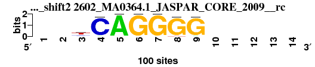 |
0.909 |
0.578 |
1.969 |
0.011 |
0.912 |
0.767 |
0.945 |
5 |
2 |
13 |
13 |
5 |
5 |
5 |
6.857 |
5 |
; positions_7nt_m1 versus 2602_MA0364.1_JASPAR_CORE_2009__rc; m=5/15; ncol2=7; w=7; offset=0; strand=R; shift=2; score= 6.8571; --tCAGGGG-----
; cor=0.909; Ncor=0.578; logoDP=1.969; NIcor=0.011; NsEucl=0.912; SSD=0.767; NSW=0.945; rcor=5; rNcor=2; rlogoDP=13; rNIcor=13; rNsEucl=5; rSSD=5; rNSW=5; rank_mean=6.857; match_rank=5
a 0 0 13 5 100 0 0 0 5 0 0 0 0 0
c 0 0 23 95 0 0 0 0 0 0 0 0 0 0
g 0 0 8 0 0 100 100 95 95 0 0 0 0 0
t 0 0 56 0 0 0 0 5 0 0 0 0 0 0
|
| 1714_MA0155.1_JASPAR_CORE_2009__shift0 (1714_MA0155.1_JASPAR_CORE_2009_) |
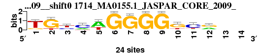 |
0.762 |
0.586 |
8.805 |
0.613 |
0.889 |
2.465 |
0.877 |
14 |
1 |
1 |
1 |
6 |
15 |
11 |
7.000 |
6 |
; positions_7nt_m1 versus 1714_MA0155.1_JASPAR_CORE_2009_; m=6/15; ncol2=12; w=10; offset=-2; strand=D; shift=0; score= 7; TGymwGGGGkcr--
; cor=0.762; Ncor=0.586; logoDP=8.805; NIcor=0.613; NsEucl=0.889; SSD=2.465; NSW=0.877; rcor=14; rNcor=1; rlogoDP=1; rNIcor=1; rNsEucl=6; rSSD=15; rNSW=11; rank_mean=7.000; match_rank=6
a 1 0 0 6 16 0 0 0 0 0 3 10 0 0
c 0 0 8 15 0 0 1 0 0 2 16 0 0 0
g 4 20 3 0 0 24 23 24 24 16 0 12 0 0
t 19 4 13 3 8 0 0 0 0 6 5 2 0 0
|
| 7480_KLF6_si_HOCOMOCO_v9__shift6 (7480_KLF6_si_HOCOMOCO_v9_) |
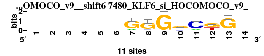 |
0.785 |
0.499 |
5.483 |
0.493 |
0.870 |
1.658 |
0.882 |
10 |
6 |
11 |
3 |
11 |
7 |
8 |
8.000 |
7 |
; positions_7nt_m1 versus 7480_KLF6_si_HOCOMOCO_v9_; m=7/15; ncol2=7; w=7; offset=4; strand=D; shift=6; score= 8; ------GGGgCkG-
; cor=0.785; Ncor=0.499; logoDP=5.483; NIcor=0.493; NsEucl=0.870; SSD=1.658; NSW=0.882; rcor=10; rNcor=6; rlogoDP=11; rNIcor=3; rNsEucl=11; rSSD=7; rNSW=8; rank_mean=8.000; match_rank=7
a 0 0 0 0 0 0 2 0 0 2 2 0 0 0
c 0 0 0 0 0 0 0 1 0 2 9 0 1 0
g 0 0 0 0 0 0 9 9 11 7 0 6 10 0
t 0 0 0 0 0 0 0 1 0 0 0 5 0 0
|
| 7492_MBD2_si_HOCOMOCO_v9__shift6 (7492_MBD2_si_HOCOMOCO_v9_) |
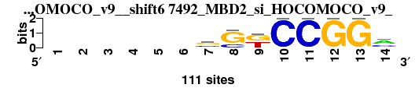 |
0.829 |
0.414 |
6.288 |
0.375 |
0.881 |
1.380 |
0.901 |
6 |
15 |
10 |
12 |
7 |
6 |
6 |
8.857 |
8 |
; positions_7nt_m1 versus 7492_MBD2_si_HOCOMOCO_v9_; m=8/15; ncol2=10; w=7; offset=4; strand=D; shift=6; score= 8.8571; ------sSkCCGGm
; cor=0.829; Ncor=0.414; logoDP=6.288; NIcor=0.375; NsEucl=0.881; SSD=1.380; NSW=0.901; rcor=6; rNcor=15; rlogoDP=10; rNIcor=12; rNsEucl=7; rSSD=6; rNSW=6; rank_mean=8.857; match_rank=8
a 0 0 0 0 0 0 7 0 1 0 0 0 0 59
c 0 0 0 0 0 0 43 28 0 111 111 0 0 39
g 0 0 0 0 0 0 51 83 57 0 0 111 111 12
t 0 0 0 0 0 0 10 0 53 0 0 0 0 1
|
| 2562_MA0306.1_JASPAR_CORE_2009__rc_shift1 (2562_MA0306.1_JASPAR_CORE_2009__rc) |
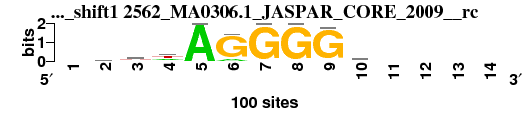 |
0.785 |
0.524 |
0.470 |
-0.128 |
0.880 |
1.857 |
0.884 |
9 |
4 |
14 |
14 |
8 |
9 |
7 |
9.286 |
9 |
; positions_7nt_m1 versus 2562_MA0306.1_JASPAR_CORE_2009__rc; m=9/15; ncol2=9; w=8; offset=-1; strand=R; shift=1; score= 9.2857; -wwwAGGGGw----
; cor=0.785; Ncor=0.524; logoDP=0.470; NIcor=-0.128; NsEucl=0.880; SSD=1.857; NSW=0.884; rcor=9; rNcor=4; rlogoDP=14; rNIcor=14; rNsEucl=8; rSSD=9; rNSW=7; rank_mean=9.286; match_rank=9
a 0 30 27 32 100 13 0 0 3 25 0 0 0 0
c 0 18 16 15 0 0 0 0 0 12 0 0 0 0
g 0 19 11 4 0 87 100 100 97 22 0 0 0 0
t 0 32 46 49 0 0 0 0 0 41 0 0 0 0
|
| 2711_PF0024.1_JASPAR_CORE_2009__shift1 (2711_PF0024.1_JASPAR_CORE_2009_) |
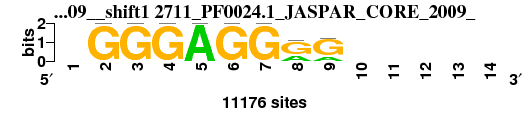 |
0.798 |
0.466 |
7.679 |
0.428 |
0.868 |
1.713 |
0.878 |
7 |
11 |
8 |
11 |
12 |
8 |
10 |
9.571 |
10 |
; positions_7nt_m1 versus 2711_PF0024.1_JASPAR_CORE_2009_; m=10/15; ncol2=8; w=7; offset=-1; strand=D; shift=1; score= 9.5714; -GGGAGGrG-----
; cor=0.798; Ncor=0.466; logoDP=7.679; NIcor=0.428; NsEucl=0.868; SSD=1.713; NSW=0.878; rcor=7; rNcor=11; rlogoDP=8; rNIcor=11; rNsEucl=12; rSSD=8; rNSW=10; rank_mean=9.571; match_rank=10
a 0 0 0 0 11176 0 0 3724 2525 0 0 0 0 0
c 0 0 0 0 0 0 0 0 0 0 0 0 0 0
g 0 11176 11176 11176 0 11176 11176 7452 8651 0 0 0 0 0
t 0 0 0 0 0 0 0 0 0 0 0 0 0 0
|
| 7202_ATERF1_ArabidopsisPBM_20140210__shift5 (7202_ATERF1_ArabidopsisPBM_20140210_) |
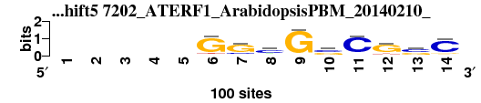 |
0.775 |
0.477 |
4.171 |
0.464 |
0.875 |
2.008 |
0.874 |
11 |
8 |
12 |
5 |
10 |
11 |
12 |
9.857 |
11 |
; positions_7nt_m1 versus 7202_ATERF1_ArabidopsisPBM_20140210_; m=11/15; ncol2=10; w=8; offset=3; strand=D; shift=5; score= 9.8571; -----GGcGsCGsC
; cor=0.775; Ncor=0.477; logoDP=4.171; NIcor=0.464; NsEucl=0.875; SSD=2.008; NSW=0.874; rcor=11; rNcor=8; rlogoDP=12; rNIcor=5; rNsEucl=10; rSSD=11; rNSW=12; rank_mean=9.857; match_rank=11
a 0 0 0 0 0 5 4 19 3 4 6 7 7 7
c 0 0 0 0 0 3 15 60 2 48 85 9 52 80
g 0 0 0 0 0 84 71 15 93 38 5 73 35 10
t 0 0 0 0 0 8 10 6 2 10 4 11 6 3
|
| 2642_MA0423.1_JASPAR_CORE_2009__rc_shift1 (2642_MA0423.1_JASPAR_CORE_2009__rc) |
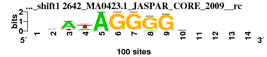 |
0.785 |
0.524 |
0.455 |
-0.144 |
0.878 |
1.915 |
0.880 |
8 |
3 |
15 |
15 |
9 |
10 |
9 |
9.857 |
12 |
; positions_7nt_m1 versus 2642_MA0423.1_JASPAR_CORE_2009__rc; m=12/15; ncol2=9; w=8; offset=-1; strand=R; shift=1; score= 9.8571; -dAwAGGGGk----
; cor=0.785; Ncor=0.524; logoDP=0.455; NIcor=-0.144; NsEucl=0.878; SSD=1.915; NSW=0.880; rcor=8; rNcor=3; rlogoDP=15; rNIcor=15; rNsEucl=9; rSSD=10; rNSW=9; rank_mean=9.857; match_rank=12
a 0 34 75 32 100 0 0 9 2 13 0 0 0 0
c 0 5 4 8 0 0 0 0 1 23 0 0 0 0
g 0 28 0 0 0 100 100 91 97 28 0 0 0 0
t 0 32 21 60 0 0 0 0 0 35 0 0 0 0
|
| 7268_TCP23_ArabidopsisPBM_20140210__shift5 (7268_TCP23_ArabidopsisPBM_20140210_) |
 |
0.771 |
0.474 |
8.646 |
0.452 |
0.866 |
2.296 |
0.856 |
12 |
9 |
4 |
6 |
13 |
13 |
13 |
10.000 |
13 |
; positions_7nt_m1 versus 7268_TCP23_ArabidopsisPBM_20140210_; m=13/15; ncol2=10; w=8; offset=3; strand=D; shift=5; score= 10; -----GGGGCCCAC
; cor=0.771; Ncor=0.474; logoDP=8.646; NIcor=0.452; NsEucl=0.866; SSD=2.296; NSW=0.856; rcor=12; rNcor=9; rlogoDP=4; rNIcor=6; rNsEucl=13; rSSD=13; rNSW=13; rank_mean=10.000; match_rank=13
a 0 0 0 0 0 2 0 1 4 1 0 1 95 1
c 0 0 0 0 0 5 0 1 9 97 98 98 1 96
g 0 0 0 0 0 77 97 98 84 1 2 0 3 1
t 0 0 0 0 0 16 3 0 3 1 0 1 1 2
|
| 2693_PF0006.1_JASPAR_CORE_2009__shift6 (2693_PF0006.1_JASPAR_CORE_2009_) |
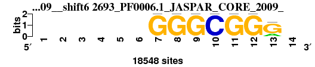 |
0.761 |
0.484 |
8.413 |
0.478 |
0.850 |
2.210 |
0.842 |
15 |
7 |
6 |
4 |
15 |
12 |
15 |
10.571 |
14 |
; positions_7nt_m1 versus 2693_PF0006.1_JASPAR_CORE_2009_; m=14/15; ncol2=7; w=7; offset=4; strand=D; shift=6; score=10.5714; ------GGGCGGG-
; cor=0.761; Ncor=0.484; logoDP=8.413; NIcor=0.478; NsEucl=0.850; SSD=2.210; NSW=0.842; rcor=15; rNcor=7; rlogoDP=6; rNIcor=4; rNsEucl=15; rSSD=12; rNSW=15; rank_mean=10.571; match_rank=14
a 0 0 0 0 0 0 0 0 0 0 0 0 4149 0
c 0 0 0 0 0 0 0 0 0 18548 0 0 0 0
g 0 0 0 0 0 0 18548 18548 18548 0 18548 18548 14399 0
t 0 0 0 0 0 0 0 0 0 0 0 0 0 0
|
| 7266_TCP15_ArabidopsisPBM_20140210__shift5 (7266_TCP15_ArabidopsisPBM_20140210_) |
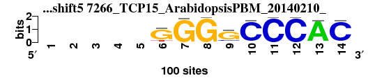 |
0.768 |
0.473 |
8.667 |
0.447 |
0.865 |
2.319 |
0.855 |
13 |
10 |
3 |
8 |
14 |
14 |
14 |
10.857 |
15 |
; positions_7nt_m1 versus 7266_TCP15_ArabidopsisPBM_20140210_; m=15/15; ncol2=10; w=8; offset=3; strand=D; shift=5; score=10.8571; -----GGGGCCCAC
; cor=0.768; Ncor=0.473; logoDP=8.667; NIcor=0.447; NsEucl=0.865; SSD=2.319; NSW=0.855; rcor=13; rNcor=10; rlogoDP=3; rNIcor=8; rNsEucl=14; rSSD=14; rNSW=14; rank_mean=10.857; match_rank=15
a 0 0 0 0 0 1 1 0 6 0 0 0 95 1
c 0 0 0 0 0 5 0 1 14 95 99 99 1 96
g 0 0 0 0 0 81 98 99 77 1 0 0 4 2
t 0 0 0 0 0 13 1 0 3 4 1 1 0 1
|
{kind=link}
{kind=link}
{kind=link}
{kind=link}
{kind=link}
{kind=link}
{kind=link}
{kind=link}
{kind=link}
{kind=link}
{kind=link}
{kind=link}
{kind=link}
{kind=link}
{kind=link}